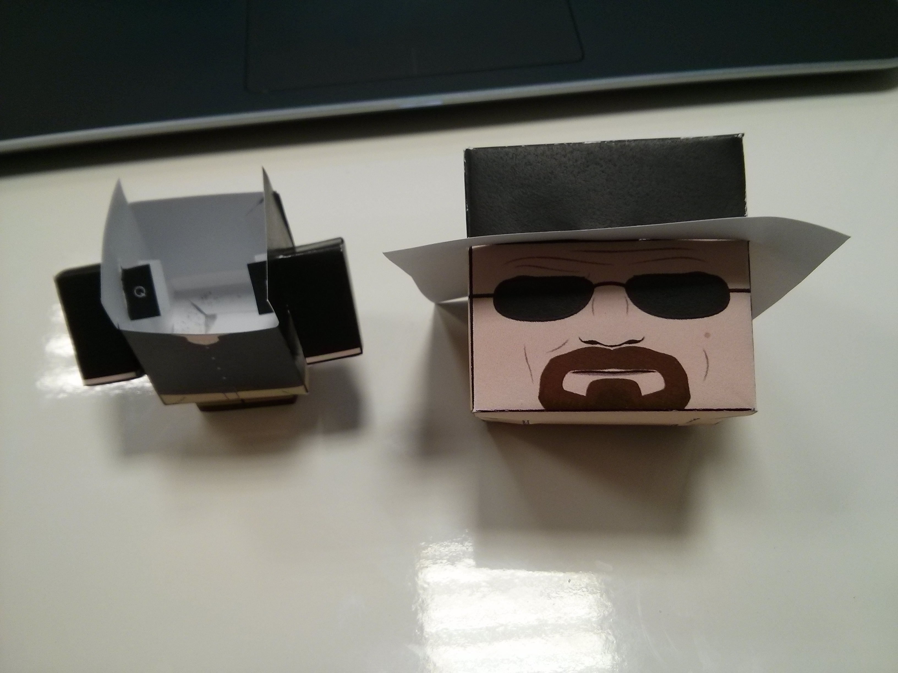

Code your christmas with Raspberry Pi and biicode
You just need paper, scissors, a servo, a Raspberry Pi and biicode!
1
2
3
4
5
6
7
8
9
10
11
12
13
14
15
16
17
18
19
20
21
22
23
24
25
26
27
28
29
30
31
32 | #include <stdio.h>
#include <errno.h>
#include <string.h>
#include <drogon/wiringpi/wiringpi/wiringpi.h>
#include <drogon/wiringpi/wiringpi/softservo.h>
int main ()
{
if (wiringPiSetup () == -1)
{
fprintf (stdout, "oops: %s\n", strerror (errno)) ;
return 1 ;
}
softServoSetup (0, 1, 2, 3, 4, 5, 6, 7) ;
softServoWrite (0, 500);
int range = 500;
int vel = 10;
for (;;)
softServoWrite (0, range);
range += vel;
if (range > 1250 || range < -250)
{
vel = -vel;
{
delay (10);
}
|
Mount it with some small modifications

Paste the head to the servo and put the servo in the body
Connected to the 5v , GPIO17 and 0v pins
GPIO Reference.
| GPIO Rev.1 |
GPIO Pin Layout |
GPIO Rev.2 |

|